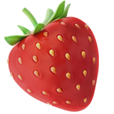
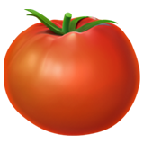
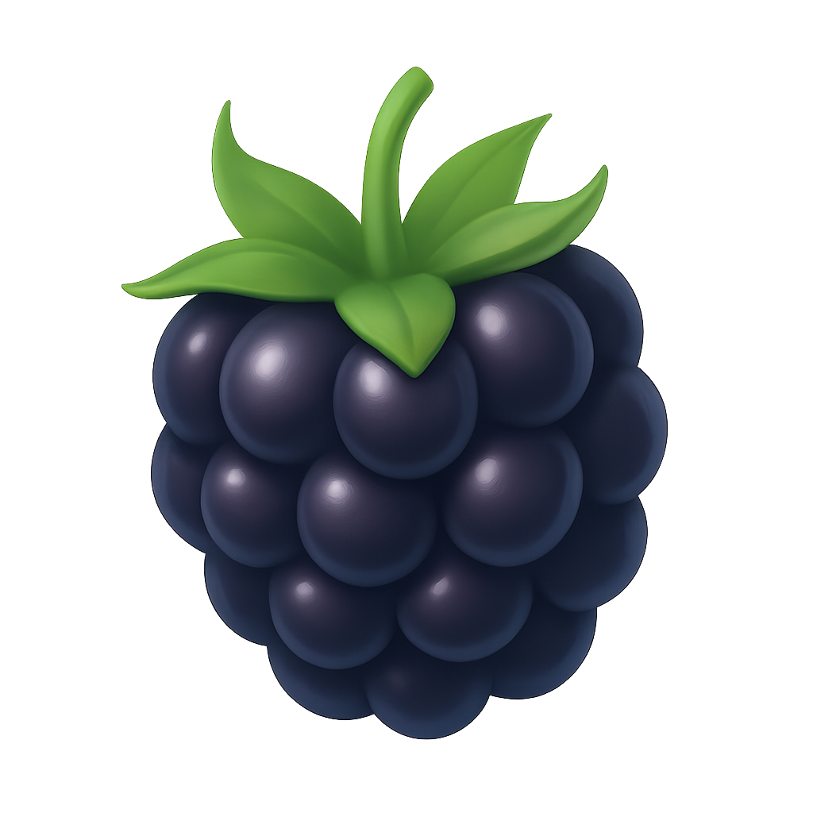
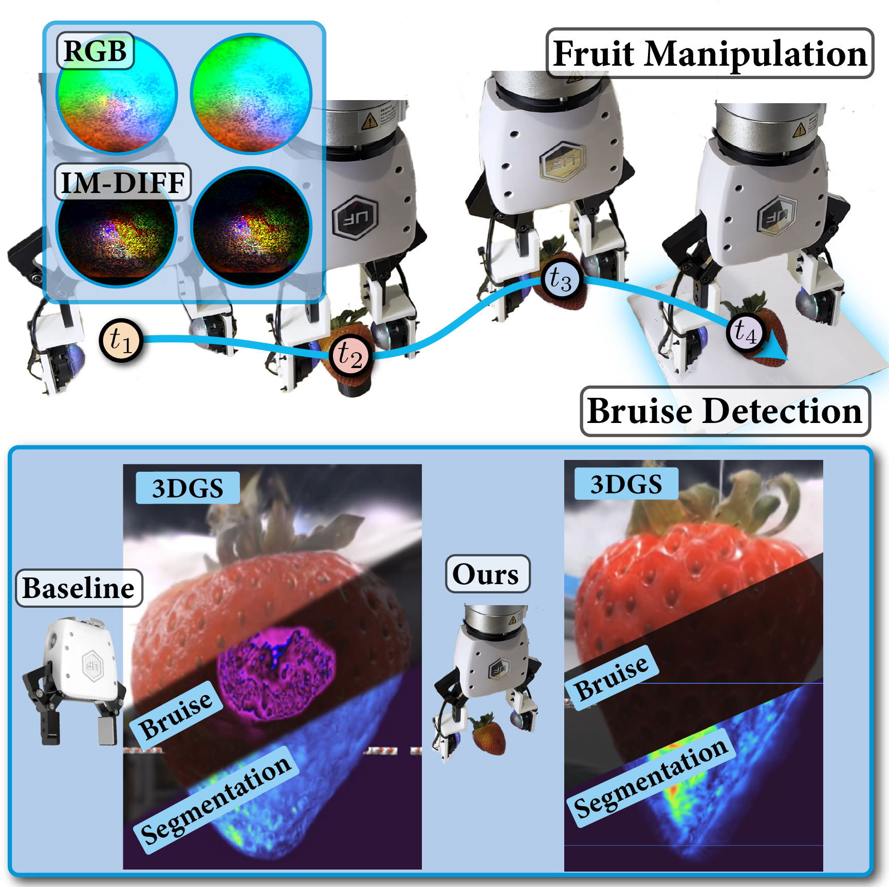
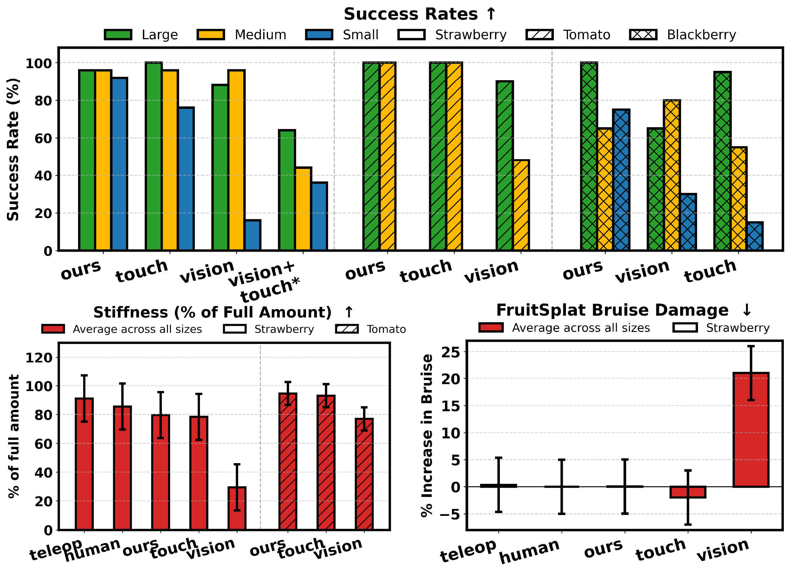
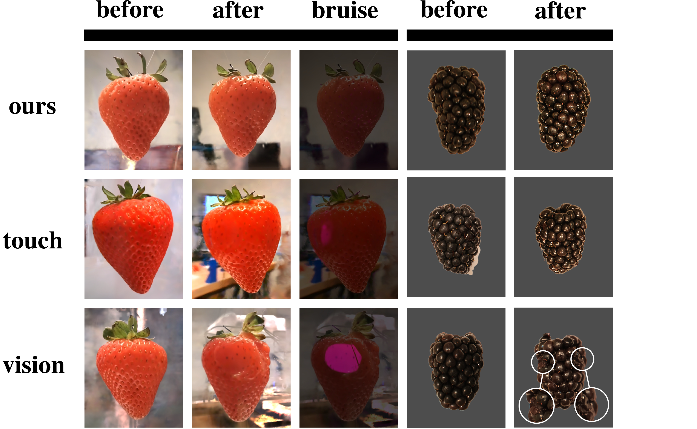

DexFruitAiden Swann*, Alex Qiu*, Matthew Strong, Angelina Zhang, Samuel Morstein, Kai Rayle, Monroe Kennedy III
Stanford University
Abstract
DexFruit is a robotic manipulation framework that enables gentle, autonomous handling of fragile fruit and precise evaluation of damage. Many fruits are fragile and prone to bruising, thus requiring humans to manually harvest them with care. In this work, we demonstrate by using optical tactile sensing, autonomous manipulation of fruit with minimal damage can be achieved. We show that our tactile informed diffusion policies outperforms baselines in both reduced bruising and pick-and-place success rate across three fruit: strawberries, tomatoes, and blackberries. In addition, we introduce FruitSplat, a novel technique to represent and quantify visual damage in high resolution 3D representation via 3D Gaussian Splatting (3DGS). Existing metrics for measuring damage lack quantitative rigor or require expensive equipment. With FruitSplat, we distill a 2D strawberry mask as well as a 2D bruise segmentation mask into the 3DGS representation. Furthermore, this representation is modular and general, which we demonstrate by distilling mask information into the representation. Overall, we demonstrate a 92% grasping policy success rate, up to a 60% reduction in damage, and up to an 31% improvement in grasp success rate on challenging fruit compared to our baselines across our three tested fruits. We rigorously evaluate this result with over 630 trials.
Method Overview

DexFruit System Overview: Our framework, DexFruit, enables safe manipulation of fragile fruit using optical tactile feedback. We further present FruitSplat, a method for accurate 3D reconstruction, automated segmentation, and bruise localization in strawberries.
Tactile Diffusion Policy
DexFruit uses a diffusion-based imitation learning policy enhanced with optical tactile sensing to gently handle delicate fruits like strawberries, tomatoes, and blackberries. The policy intelligently switches between visual and tactile inputs, enabling precise grasping while minimizing bruising. This approach enables safe grasping without the need for complex gripper hardware.
FruitSplat
FruitSplat is a novel damage quantification pipeline based on 3D Gaussian Splatting. It reconstructs 3D models of fruit before and after manipulation using web-cam videos, then distills 2D segmentation masks (for bruises and fruit boundaries) into the 3D representation. It computes per-point bruise probabilities and compares pre and post-grasp models to assess damage. This allows for high-resolution, quantitative analysis of bruise extent without expensive scanning hardware.
Results
DexFruit significantly outperforms baseline methods in both manipulation success and damage reduction across over 630 trials with strawberries, tomatoes, and blackberries. It achieves a 95–100% success rate while minimizing external bruising and internal damage, as measured by a novel stiffness metric and the FruitSplat bruise analysis pipeline. Compared to vision-only and touch-only baselines, DexFruit reduces bruising by up to 20% and increases grasp success by up to 83% on challenging fruits. These results demonstrate that integrating optical tactile feedback with diffusion policies enables safe manipulation of fragile produce.

Quantitative Results: This figure shows qualitative comparisons of strawberries before and after manipulation, rendered using FruitSplat. DexFruit results in nearly no visible bruising, while vision and touch-only methods show surface damage. For blackberries, DexFruit also causes less drupelet rupture. Tomatoes are omitted from visual comparison due to limited visible bruising, though stiffness metrics still show a difference in internal damage.

Qualitative Results: This figure shows quantitative comparisons of fruit before and after manipulation. Above is shown the success rates of each method across all three fruits. Below on the left we shown the internal damage metrics while on the right is the external FruitSplat bruise metric.
BibTeX
@ARTICLE{11302794,
author={Swann, Aiden and Qiu, Alex and Strong, Matthew and Zhang, Angelina and Morstein, Samuel and Rayle, Kai and Kennedy, Monroe},
journal={IEEE Robotics and Automation Letters},
title={DexFruit: Dexterous Manipulation and Gaussian Splatting Inspection of Fruit},
year={2026},
volume={11},
number={2},
pages={2034-2041},
keywords={Robot sensing systems;Three-dimensional displays;Robots;Optical sensors;Imitation learning;Measurement;Visualization;Optical imaging;Noise reduction;Tactile sensors;Force and tactile sensing;agricultural automation;dexterous manipulation},
doi={10.1109/LRA.2025.3645647}}